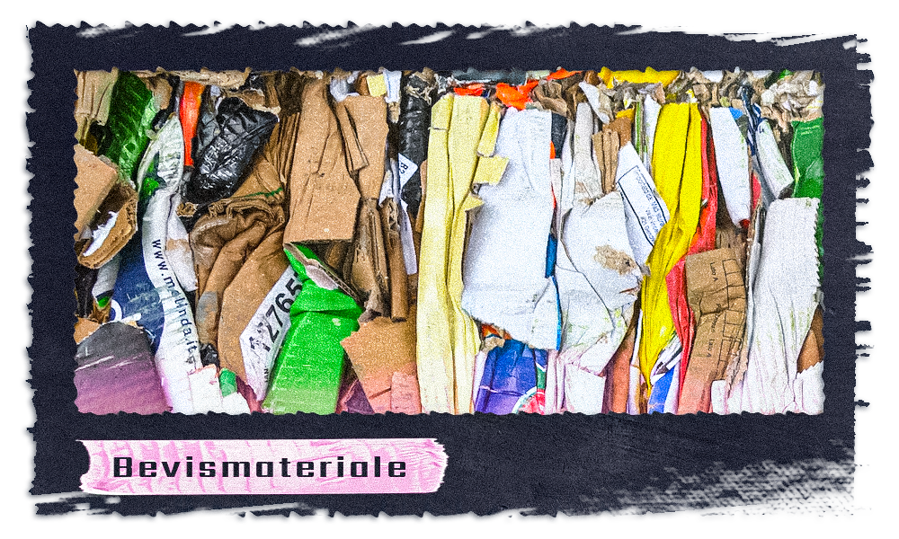
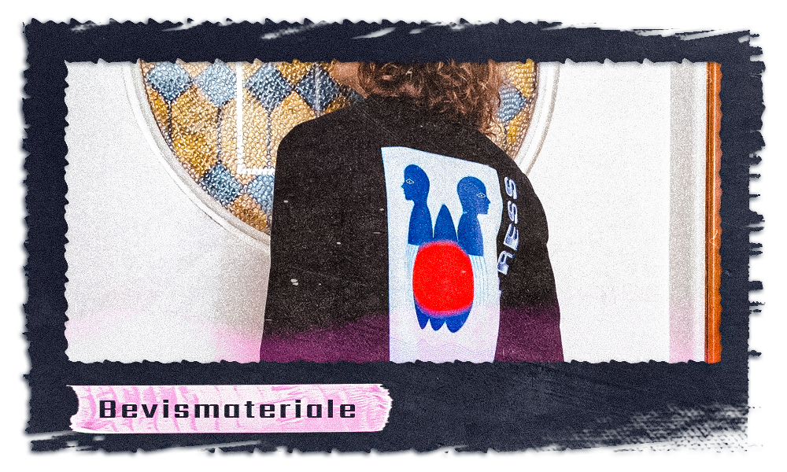
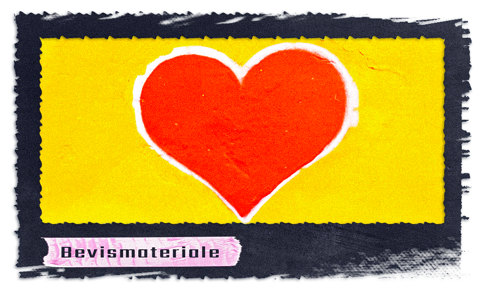
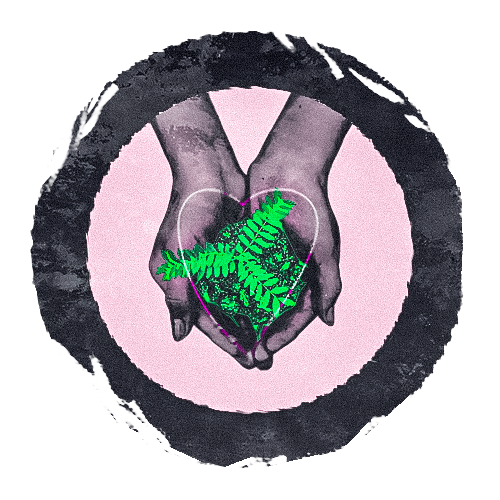

All-in på upcycling
men hvad er det helt præcist?
Upcycling er en magisk proces, hvor vi transformerer og genopfinder eksisterende materialer og genstande til noget nyt og værdifuldt. Det handler om at genbruge og genanvende, men med et twist af kreativitet og innovation. I stedet for at kassere tingene og bidrage til affaldsbjerget, giver upcycling os muligheden for at skabe noget unikt samtidig med at vi mindsker vores miljømæssige fodaftryk.
Denne bæredygtige praksis hjælper med at reducere behovet for produktion af nye materialer, hvilket i sidste ende sparer energi og ressourcer. Ved at bruge det, vi allerede har, formindsker vi affaldsmængden og mindsker vores påvirkning på planeten. Upcycling er en af de mest effektive måder at bekæmpe affaldsproblemet og bevare vores miljø.
Men upcycling er ikke kun godt for miljøet – det giver også mulighed for at skabe noget unikt og personligt. Hver genstand, der bliver upcyclet, får sin egen historie og karakter. Du kan udtrykke din kreativitet og skabe noget, der skiller sig ud fra mængden. Fra tøj og accessories til møbler og dekorative genstande er der ingen grænser for, hvad der kan opnås gennem upcycling.
Når du vælger upcyclede produkter, støtter du samtidig lokale kunstnere og håndværkere, der bruger deres talent til at skabe unikke og bæredygtige genstande. Du bliver en del af en bevægelse, der værdsætter individualitet, bæredygtighed og ansvarlighed.
Tag det første skridt og dyk ned i den fantastiske verden af upcycling. Udforsk vores kollektion af unikke upcyclede produkter, der spænder fra tøj og accessories til boligindretning. Opdag den utrolige mulighed for at redde verden, én genstand ad gangen, og lad din stil være med til at gøre en forskel. Sammen kan vi skabe en mere bæredygtig og smuk verden for os alle.
Så vær "All-in på Upcycling" og oplev den transformative kraft af denne bæredygtige praksis. Lad os sammen forme en fremtid, hvor kreativitet og omtanke går hånd i hånd for at redde vores planet.
